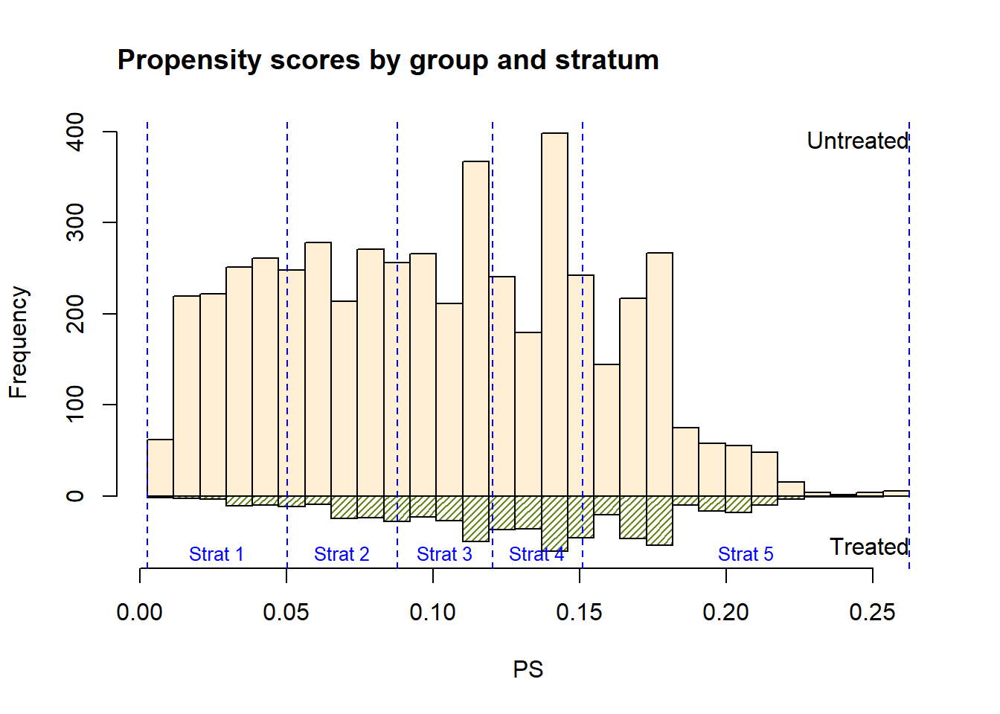
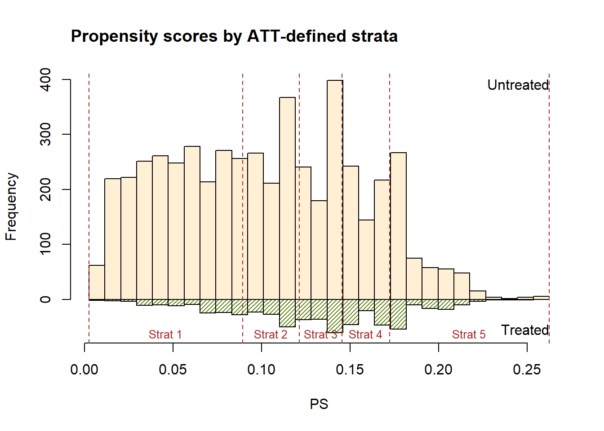
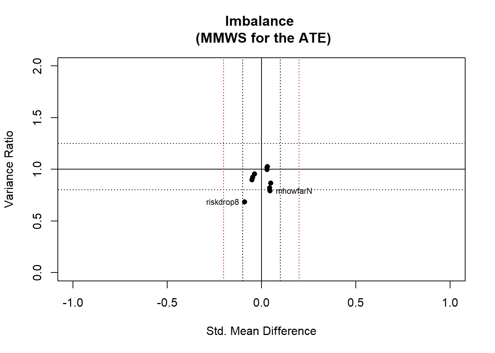
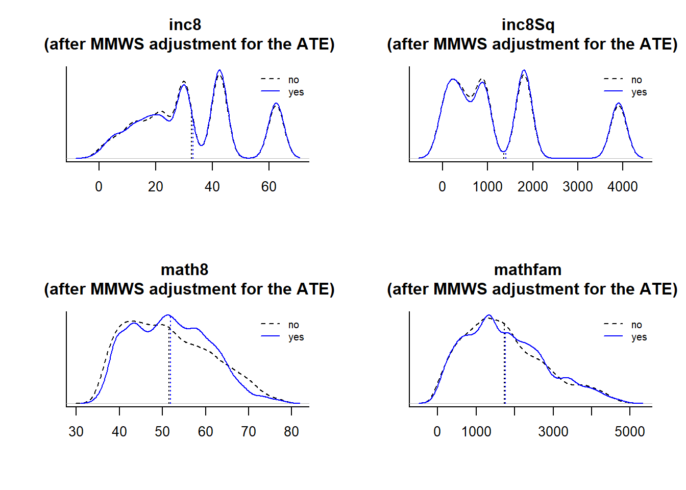
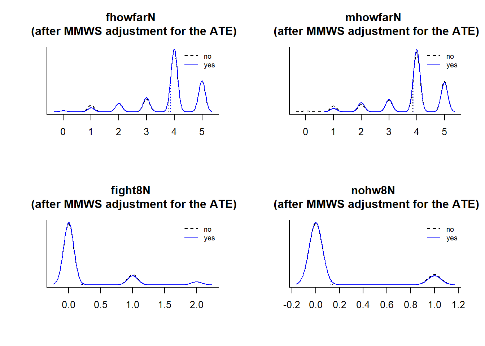
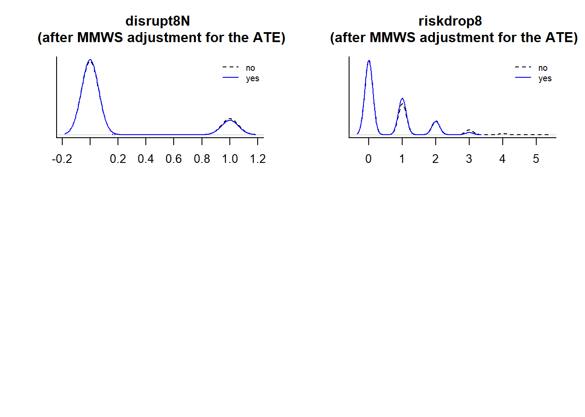
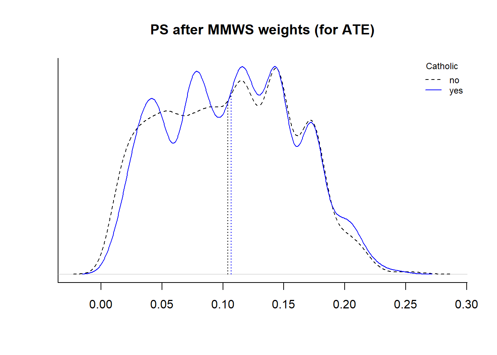
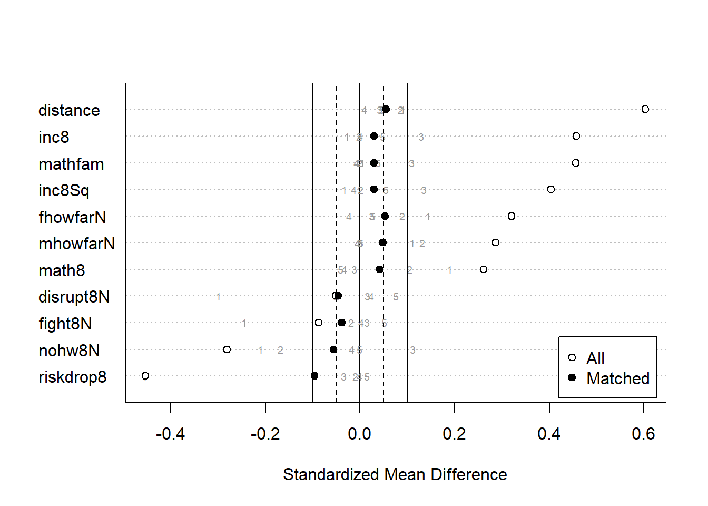
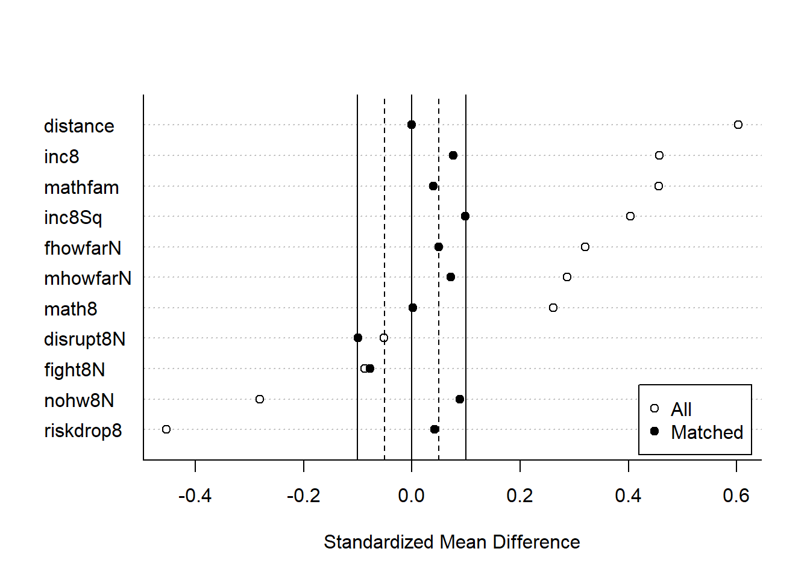

Part 12 Propensity Score Analysis 3: Stratification and Matching
In this unit, we begin by calculating the weights of five strata using marginal mean weighting through stratification (MMWS). We work through this process manually, then we use the MatchIt package (Ho et al., 2021) to do the same thing using less code. After that, we continue with the MatchIt package and apply one of the matching methods, full (optimal distance) matching, to our data.
We will use the same data set and custom functions as those used in the previous unit. Also, as we did in the last unit, the analysis will be organized in two broad steps: (a) estimating the propensity scores and examining how well the adjustment method worked, and (b) estimating the effect. Conducting the first step on a data set that excludes the outcome variables is important for avoiding the temptation of selecting a method that yields the estimated effect we desire. For pedagogical purposes, we do the first and second step with each method—in other words, we implement the stratification, then attach the outcome variables and estimate the effect. However, in operational settings, we would allocate much more attention to the first step by trying out the various methods of adjustment and their variations. We would use theory and evidence to select the best combination of covariates and we might examine IP weighting, stratification (perhaps also varying the number of strata), and various matching methods that align with the expectations in our discipline in our effort to find the best approach for dealing with selection bias. Only after committing to the best adjustment method, would we then proceed to estimate the effects.
Let’s get started with stratification. One of the benefits of using stratification over the inverse-propensity score weights, which was the method we examined in our previous unit, is that we reduce the likelihood that we get extreme weights. However, this comes at a cost in that we can lose precision in our effort to correct for selection bias because we may still have imbalance within each stratum.
12.1 Calculate the MMWSs from the propensity scores
12.1.1 Estimate the propensity scores
Let’s use the same logistic-regression we used in the previous unit to estimate the propensity scores.
ps_mdl1 <- as.formula(paste('catholic', '~', paste(covnames, collapse = ' + ')))
out1 <- glm(ps_mdl1, data = ca, family = 'binomial')
ca$ps <- out1$fitted12.1.2 Calculate the quintiles
Using quantiles of the propensity scores, \(\hat{e}(x_i)\), we will create five strata. This process sorts the cases from low to high and splits the observations into five intervals. Applying this procedure to the entire data set is appropriate for the ATE; for the ATT, we might be better off creating the strata based on the treated group’s propensity scores and then classifying the untreated-group (i.e., control-group) observations into those strata within those defined quintiles. We will also do this later in this section.
Here, we’ll use the quantile() and cut() functions. (Because we are creating five intervals, we can call them quintiles.) Within the quantile() function, the seq(0, 1, by = .2) code creates a sequence of numbers (0, 0.2, 0.4, 0.6, 0.8, 1), that represent the breaks to use.
ca$strat5 <- cut(ca$ps,
quantile(ca$ps, seq(0, 1, by = .2)),
include.lowest = TRUE) The cut() function creates a factor. This is our stratification variable. The names of the levels are generated from the values in the propensity score variable that define the interval in each quintile. For example, we can see that the first quintile included the \(\hat{e}(x_i)\) scores 0.0026 and 0.0504 and everything in between. This is why we included the include.lowest = TRUE argument in the cut() function—to be sure we included cases at the lowest break value (in this case, making the interval closed, as [0.0026,0.0504], instead of half open, as (0.0026,0.0504], which would have excluded cases with \(\hat{e}(x_i) = 0.0026\).). The second level of our factor includes observations in the half-open interval, (0.0504,0.088], which includes cases with \(0.0504 < \hat{e}(x_i) \le 0.088\).
levels(ca$strat5)## [1] "[0.0026,0.0504]" "(0.0504,0.088]" "(0.088,0.12]" "(0.12,0.151]"
## [5] "(0.151,0.263]"We don’t really need these interval labels. So, to make it easier to display the stratum variable in the output, we can change these level labels to 1 through 5:
levels(ca$strat5) <- 1:512.1.3 Examine the strata
We can take look at the number of observations per treatment-group status in each stratum. This is a preliminary examination of common support.
with(ca, table(catholic, strat5))## strat5
## catholic 1 2 3 4 5
## no 1100 1054 1017 967 941
## yes 35 80 117 167 193Further evidence of common support can be with a histogram of the treated and untreated groups, within each stratum. We can use our custom function, overlap(), from our previous unit for this. We are adding vertical lines to show where the stratum cuts are and help us see whether the common support assumption seems to hold.
with(ca, overlap(ps, catholic,
bin=30,
title = "Propensity scores by group and stratum",
xlab = "PS"))
abline(v = quantile(ca$ps, seq(0, 1, by = .2)), col = 'blue', lty = 2)
It appears that regions on the ends—the very low end of the first stratum and the very high end of the fifth stratum—are not well represented by the treated group. The frequencies of observations in the other bins reveal that we will probably achieve adequate common support using these strata. We can further examine common support using density plots of each treatment-condition after we have applied the weights to the data, which is what we do next.
12.1.4 Calculate the MMWSs
Similar to what we did in an earlier lesson with strata, we will use the n-sizes of each stratum, the n-sizes of each of the two conditions in the treatment variable, and the n-sizes of the treatment conditions within each stratum. Hong (2015) provides a thorough description of MMWS weighting.
12.1.4.1 ATE MMWS equation
In investigations of the ATE, the formula for the MMWS weights that Hong provides is
\[\begin{equation} \text{MMWS}_{ATE} = \frac{n_s}{n_{z,s}} \times \text{pr}(Z = z) \text{ ,} \end{equation}\]
where \(n_s\) is the number of cases in stratum \(s\), \(n_{z,s}\) is the number of cases in treatment-condition \(z\) in stratum \(s\), and \(\text{pr}(Z = z)\) is the proportion of cases in treatment condition \(Z\) in the entire data set (ignoring strata). For the treated group, this is
\[ \text{MMWS}_{ATE,z=1} = \frac{n_s}{n_{z,s}} \times \text{pr}(Z = 1) \text{ ,} \] and for the untreated group, it is
\[ \text{MMWS}_{ATE,z=0} = \frac{n_s}{n_{z,s}} \times \text{pr}(Z = 0) \text{ .} \]
We can also think of this as a single ratio, with the numerator representing the expected n-size of the treatment-group condition in the stratum and the denominator representing its corresponding observed n-size.
\[\begin{equation} \text{MMWS}_{ATE} = \frac{n_s \times \text{pr}(Z = z)}{n_{z,s}} \tag{12.1} \end{equation}\]
12.1.4.2 ATT MMWS equation
For research questions investigating the ATT, the MMWS is 1 for the treated condition. For the untreated condition, is
\[\begin{equation} \text{MMWS}_{ATT,z=0} = \frac{n_{z=1,s} \times \text{pr}(Z = 0)}{n_{z=0,s} \times \text{pr}(Z = 1) }\text{ ,} \tag{12.2} \end{equation}\]
which we can further simplify to \[\text{MMWS}_{ATT,z=0} = \frac{n_{z = 1,s}}{n_{z=0,s}} \times \frac{n_{z=0}}{n_{z=1}} \text{ .}\] Let’s think about this equation. With the ATT, our treated cases are our interest. But, we need to get a good counterfactual before we can get an unbiased estimate of the effect of the treatment on the treated. One way to think about the equation for the ATT weighting on the untreated is to consider that \(\frac{n_{z=1,s}}{n_{z=0,s}}\) is a simplification of the ratio of the observed proportions of treated and untreated cases in the stratum: \[\frac{\text{pr}(z = 1)_s}{\text{pr}(z = 0)_s} = \frac{\frac{n_{z=1,s}}{n_{s}}}{\frac{n_{z=0,s}}{n_{s}}} = \frac{n_{z=1,s}}{n_{z=0,s}}\] For example, if there are many fewer treated than untreated cases in this stratum, this is a small number (as we see with Stratum 1 in our data, with 35 treated and 1100 untreated cases). However, this ratio may reflect the same proportion of treated-to-untreated cases in our total sample. If that’s the case, then the adjustment that we multiply this by, as in \[\frac{\text{pr}(z = 1)_s}{\text{pr}(z = 0)_s} \times \frac{\text{pr}(z = 0)} {\text{pr}(z = 1)} \text{ ,}\] will result in a weight of \(1\) for this stratum’s untreated cases. This would make sense because the proportion in the stratum is the same as that across all the strata. However, if our stratum’s low treated-to-untreated proportion is much lower than that of our total sample, our adjustment down-weights the untreated cases in this stratum to account for this stratum’s weirdness (which is what we have to do with our first stratum in this data set).
12.1.4.3 MMWS for the ATE
Let’s calculate the MMWSs for the ATE. For this, we will use Base R’s table() function. First, we get the n-sizes of the two factors—the stratification variable, strat5, and the treatment variable, catholic—as well as the observed cell size of each treatment condition in each stratum, obs_n_s, which is the denominator in our ATE equation, Equation (12.1).
n_s <- table(ca$strat5) # n per stratum
n_t <- table(ca$catholic) # n per treatment condition
obs_n_s <- with(ca, table(catholic, strat5)) # Observed n per treatment condition in each stratumThe prop.table() is our friend for calculating the proportions; exp_props is the expected proportion per group in each stratum, which is the same as marginal probability. exp_prop_0 and exp_prop_1 are the expected proportions for the untreated and treated groups, respectively. From this, we can get the numerator in our ATE equation, Equation (12.1).
exp_props <- prop.table(n_t) #
exp_prop_0 <- exp_props[1]
exp_prop_1 <- exp_props[2]
exp_n_s <- rbind(no = (exp_prop_0 * n_s), # "no" is factor label of untreated grp in each strat
yes= (exp_prop_1 * n_s)) # "yes" is factor label of treated grp in each stratThe MMSW is the ratio of the expected to observed n-size per cell.
(wts_ATE <- exp_n_s / obs_n_s)## 1 2 3 4 5
## no 0.9241059 0.9635872 0.9986439 1.0502801 1.0792996
## yes 3.3852432 1.4797390 1.0117874 0.7088570 0.6133633We see that the treated cases in the first stratum have much more weight compared to their counterparts in the untreated group. We see the reverse pattern in stratum 5.
Let’s merge these weights with the data. This requires a little data wrangling. We need to create a data frame that has the same variable names, catholic and strat5, and be sure the variables are the same types in this small MMWS data frame and our full data set. We also need to be sure the factors have exactly the same factor levels. These operate as keys when we merge this small data set with the large one so that each observation has the correct weight.
Let’s change our table object, wts_ATE into a data frame:
MMWS_ATE <- data.frame(wts_ATE)
MMWS_ATE## Var1 Var2 Freq
## 1 no 1 0.9241059
## 2 yes 1 3.3852432
## 3 no 2 0.9635872
## 4 yes 2 1.4797390
## 5 no 3 0.9986439
## 6 yes 3 1.0117874
## 7 no 4 1.0502801
## 8 yes 4 0.7088570
## 9 no 5 1.0792996
## 10 yes 5 0.6133633Notice that Var1 corresponds with our treatment group variable,; Var2 with our stratum variable, and Freq with our weight.72 Let’s rename these so that the first two are the same as in our data:
names(MMWS_ATE) <- c("catholic", "strat5", "MMWS_ATE")We need to make sure our two variables catholic and strat5 are the same type as those in our data set:
str(MMWS_ATE)## 'data.frame': 10 obs. of 3 variables:
## $ catholic: Factor w/ 2 levels "no","yes": 1 2 1 2 1 2 1 2 1 2
## $ strat5 : Factor w/ 5 levels "1","2","3","4",..: 1 1 2 2 3 3 4 4 5 5
## $ MMWS_ATE: num 0.924 3.385 0.964 1.48 0.999 ...str(ca[, c("catholic", "strat5")])## 'data.frame': 5671 obs. of 2 variables:
## $ catholic: Factor w/ 2 levels "no","yes": 2 2 2 2 2 2 2 2 2 2 ...
## $ strat5 : Factor w/ 5 levels "1","2","3","4",..: 2 3 3 2 3 2 3 3 4 1 ...The seem to be. We could also use the levels() function each variable in both data sets if we wanted to be more thorough.
Let’s use the left_join() function from the dplyr package to merge the data.73 By including our large data set first, ca, we are ensuring that all observations in that data set are retained. The MMWS_ATE merges with that data set based on our two shared variables, catholic and strat5, so what gets added is the MMWS_ATE variable. For instance, each observation in our ca data frame that is in the treated condition (catholic = yes) in the first stratum (strat5 = 1) will have the weight 3.385.
library(dplyr)
ca <- inner_join(ca, MMWS_ATE)Let’s take a look at the weights per treatment condition in each stratum to verify these are what we expect. Here, we’re using functions from the dplyr package (in tidyverse).74 The select() function is a way to restrict our analysis to the specified columns. Here, we’re keeping it simple and examining only three variables. The arrange() function orders the data from low to high, first by strat5, then by catholic in our code. The unique() function (which is part of Base R) returns only those rows that are unique in any combination of variables. This is why we restricted our examination using the select() function. The data.frame() function is an optional preference for viewing the output.
ca %>% select(catholic, strat5, MMWS_ATE) %>%
arrange(strat5, catholic) %>%
unique() %>% data.frame(row.names = NULL)## catholic strat5 MMWS_ATE
## 1 no 1 0.9241059
## 2 yes 1 3.3852432
## 3 no 2 0.9635872
## 4 yes 2 1.4797390
## 5 no 3 0.9986439
## 6 yes 3 1.0117874
## 7 no 4 1.0502801
## 8 yes 4 0.7088570
## 9 no 5 1.0792996
## 10 yes 5 0.6133633We see that the result is similar to our object, wts_ATE, which we had earlier calculated and saved as an independent object.
wts_ATE## 1 2 3 4 5
## no 0.9241059 0.9635872 0.9986439 1.0502801 1.0792996
## yes 3.3852432 1.4797390 1.0117874 0.7088570 0.6133633These ATE MMWSs take the observed n-size in each treatment group, in each stratum, and weight the observations to reflect the expected n-size. For instance, the treatment condition in stratum 1 (catholic = yes) is under-represented if we consider that about 10.4% of the total sample is in this condition; this proportion of the stratum’s n-size yields an expected n of 118. With our MMWS, each of these 35 observations is weighted by 3.39 times more so that they represent 118 people when we estimate the ATE.
| Stratum | Publ | Cath | Publ | Cath | Publ | Cath | Publ | Cath |
|---|---|---|---|---|---|---|---|---|
| 1 | 0.896 | 0.104 | 1016.52 | 118.48 | 1100 | 35 | 0.92 | 3.39 |
| 2 | 0.896 | 0.104 | 1015.62 | 118.38 | 1054 | 80 | 0.96 | 1.48 |
| 3 | 0.896 | 0.104 | 1015.62 | 118.38 | 1017 | 117 | 1.00 | 1.01 |
| 4 | 0.896 | 0.104 | 1015.62 | 118.38 | 967 | 167 | 1.05 | 0.71 |
| 5 | 0.896 | 0.104 | 1015.62 | 118.38 | 941 | 193 | 1.08 | 0.61 |
12.1.4.4 MMWS for the ATT
If our research question were about the ATT, we would do something similar. We could use the strata that we defined above with the propensity scores of the entire sample. Instead, let’s define the strata based on the propensity scores of the cases in the treated condition. This ensures that each stratum has about the same number of treated cases. After that, let’s use the MMWS equation and connect the weights to the data.
12.1.4.4.1 Create the strata based on ATT quintiles
To get the quintiles based on the treated group, we can subset the data and use the quantiles() function we used before (which previously was part of our cut() function):
strat5_ATT <- quantile(subset(ca, catholic == "yes")$ps, # treated group only
seq(0, 1, by = .2))
strat5_ATT## 0% 20% 40% 60% 80% 100%
## 0.009990315 0.089461609 0.121409721 0.145534449 0.172387157 0.246263734To avoid excluding non-treated cases with \(\hat{e}(x_i) < 0.0099903\) or \(\hat{e}(x_i) > 0.2462637\), we can replace these with 0 and 1 or with the minimum and maximum of the propensity scores in the total data set:
strat5_ATT[c(1, length(strat5_ATT))] <- c(min(ca$ps), max(ca$ps))
strat5_ATT## 0% 20% 40% 60% 80% 100%
## 0.002595558 0.089461609 0.121409721 0.145534449 0.172387157 0.262511031We can now assign cases to the strata based on these breaks of the five quintiles. To do this, we can use the findInterval() function with the full data:
ca$strat5_ATT <- findInterval(ca$ps, strat5_ATT, rightmost.closed = TRUE, left.open = TRUE)We need to make the stratification variable a factor:
ca$strat5_ATT <- factor(ca$strat5_ATT)Out of curiosity, we might wish to see how many treated cases are in each stratum.
with(subset(ca, catholic == "yes"), table(strat5_ATT))## strat5_ATT
## 1 2 3 4 5
## 119 118 118 118 119We see roughly the same number of treated cases across the strata.
We may also examine a crosstab of these strata and those used for the ATE:
with(ca, table(strat5, strat5_ATT))## strat5_ATT
## strat5 1 2 3 4 5
## 1 1135 0 0 0 0
## 2 1134 0 0 0 0
## 3 48 1086 0 0 0
## 4 0 48 820 266 0
## 5 0 0 0 468 666We can see that the lowest stratum has a lot more cases compared to the stratification based on the entire sample. We can see this with the by-group histogram (from our custom overlap() function), too:
with(ca, overlap(ps, catholic,
bin=30,
title = "Propensity scores by ATT-defined strata",
xlab = "PS"))
abline(v = strat5_ATT, col = 'brown', lty = 2)
For the MMWS Weights for ATT, the weight is 1 for the treated group and uses Equation (12.2) for the untreated group. We need to use the n-size of the untreated and treated groups per stratum in separate parts of the equation. We can take those from the obs_n_s object but first we should make sure our n-sizes per stratum are now based on the ATT strata. The code right here is copied from the previous code, but we have replaced strat5_ATT with strat5_ATT to get the n_s and obs_n_s.
n_s <- table(ca$strat5_ATT) # n per ATT-defined stratum
n_t <- table(ca$catholic) # n per treatment condition
obs_n_s <- with(ca, table(catholic, strat5_ATT)) # cell size (treatment & ATT-defined stratum)
n_0s <- obs_n_s[1,] # n-size of untreated group per stratum
n_1s <- obs_n_s[2,] # n-size of treated group per stratumLet’s plug the n_0s and n_1s into the equation for the untreated group, where \(z = 0\).
MMWS_ATT_0 <- (n_1s * exp_prop_0 ) / (n_0s * exp_prop_1)For the treated group, we can replicate a series of \(1\)s for the same number of strata that are in the treatment group. (We could have just as easily written rep(1, 5) or c(1,1,1,1,1). We juxtapose these weights per condition and stratum with the rbind() function, which is just for examining the result of our calculations per stratum.
MMWS_ATT_1 <- rep(1, length(MMWS_ATT_0))
rbind(MMWS_ATT_0, MMWS_ATT_1)## 1 2 3 4 5
## MMWS_ATT_0 0.4644894 0.9964254 1.44212 1.643455 1.866449
## MMWS_ATT_1 1.0000000 1.0000000 1.00000 1.000000 1.000000We see that in the lowest stratum, the untreated cases are weighted very low, less than half of that of their treated counterparts. Those in the highest stratum have higher weights.
If we plan on merging these with the data, we should create a data frame. Notice that the rep() function uses each = for our catholic variable but times = for our strat5 variable. If we monkey around with those, we can see how things can go wrong. We want to be sure these two factors correctly line up with the weights.
MMWS_ATT <- data.frame(catholic = rep(c("no","yes"), each = length(MMWS_ATT_0)),
strat5_ATT = rep(names(MMWS_ATT_0), times = 2),
MMWS_ATT = c( MMWS_ATT_0, MMWS_ATT_1) )
MMWS_ATT## catholic strat5_ATT MMWS_ATT
## 1 no 1 0.4644894
## 2 no 2 0.9964254
## 3 no 3 1.4421200
## 4 no 4 1.6434549
## 5 no 5 1.8664491
## 6 yes 1 1.0000000
## 7 yes 2 1.0000000
## 8 yes 3 1.0000000
## 9 yes 4 1.0000000
## 10 yes 5 1.0000000If we look at the structure, we see we need to change these two key variables into factors:
str(MMWS_ATT)## 'data.frame': 10 obs. of 3 variables:
## $ catholic : chr "no" "no" "no" "no" ...
## $ strat5_ATT: chr "1" "2" "3" "4" ...
## $ MMWS_ATT : num 0.464 0.996 1.442 1.643 1.866 ...MMWS_ATT$catholic <- factor(MMWS_ATT$catholic)
MMWS_ATT$strat5_ATT <- factor(MMWS_ATT$strat5_ATT)
str(MMWS_ATT)## 'data.frame': 10 obs. of 3 variables:
## $ catholic : Factor w/ 2 levels "no","yes": 1 1 1 1 1 2 2 2 2 2
## $ strat5_ATT: Factor w/ 5 levels "1","2","3","4",..: 1 2 3 4 5 1 2 3 4 5
## $ MMWS_ATT : num 0.464 0.996 1.442 1.643 1.866 ...library(dplyr)
ca <- inner_join(ca, MMWS_ATT)
ca %>% select(catholic, strat5_ATT, MMWS_ATT) %>%
arrange(strat5_ATT, catholic) %>%
unique() %>% data.frame(row.names = NULL)## catholic strat5_ATT MMWS_ATT
## 1 no 1 0.4644894
## 2 yes 1 1.0000000
## 3 no 2 0.9964254
## 4 yes 2 1.0000000
## 5 no 3 1.4421200
## 6 yes 3 1.0000000
## 7 no 4 1.6434549
## 8 yes 4 1.0000000
## 9 no 5 1.8664491
## 10 yes 5 1.0000000We have successfully calculated the weights and connected them to the data frame.
12.2 Conduct balance checks after weighting
For the code to investigate the balance checks and overlap, we will use the variable MMWS in case we want to switch it and examine the ATT. Here, we’ll use the ATE:
ca$MMWS <- ca$MMWS_ATE # change to ca$MMWS_ATT to examine the ATT.Let’s use our wselect.diff() to examine the imbalance statistics in the covariates after we have weighted the observations.
imbal_adj <- t(sapply(ca[, covnames],
wselect.diff, grp = ca$catholic, wt = ca$MMWS))
round(imbal_adj,3)## Mean.Diff Std.Error p-value Std.Mean.Diff Var.Ratio
## inc8 0.512 0.753 0.496 0.029 1.019
## inc8Sq 38.604 54.467 0.479 0.031 1.027
## math8 0.398 0.421 0.344 0.043 0.821
## mathfam 30.848 45.340 0.496 0.030 0.998
## fhowfarN 0.053 0.048 0.271 0.049 0.867
## mhowfarN 0.047 0.046 0.316 0.046 0.790
## fight8N -0.018 0.022 0.406 -0.036 0.955
## nohw8N -0.017 0.015 0.254 -0.051 0.900
## disrupt8N -0.017 0.017 0.295 -0.046 0.924
## riskdrop8 -0.074 0.039 0.056 -0.089 0.683We have achieved pretty good balance. The IPWs balance the distributions of the observed covariates pretty well. There are two covariates with borderline imbalance in their variance ratios, but this may be acceptable.
imbal_plotter(imbal_adj, subtitle = "(MMWS for the ATE)")
It seems like our IPW approach in the previous lesson did a better job of balancing on the covariates.
Let’s check the overlap using density plots for each covariate. The vertical lines also show the balance in the mean on the covariate for each group.
dnsty_plotter(ca, covnames, grp = ca$catholic,
wt = ca$MMWS,
subtitle = "(after MMWS adjustment for the ATE)")


We can check the balance and overlap of the (logit of the) propensity score estimates:
dnsty(ca$ps, ca$catholic,
main = "PS (unadjusted)",
legtitle="Catholic")
dnsty(ca$ps, ca$catholic,
wt = ca$MMWS,
main = "PS after MMWS weights (for ATE)",
legtitle="Catholic")
The MMWS does improve common support but maybe not as well as the IPW did in our last lesson.
12.3 Estimate the ATE
As we did in the previous lesson, we estimated the propensity scores, calculated the weights, and examined the functioning of our weighting with a data set that excluded our outcome variables. Let’s attach them to our data set and estimate the effect. Again, we are using the survey package (Lumley, 2021).
library(dplyr)
outcome <- read.csv("ch12_cath_outcomes_only.csv")
ca2 <- left_join(ca, outcome, by = "id")library(survey)
sdesign_MMWS_ATE <- svydesign(ids = ~1, weights = ~MMWS_ATE, data = ca2)
fit_MMWS_ATE <- svyglm(math12 ~ catholic, design = sdesign_MMWS_ATE)
summary(fit_MMWS_ATE)##
## Call:
## svyglm(formula = ..1, design = ..2)
##
## Survey design:
## survey::svydesign(...)
##
## Coefficients:
## Estimate Std. Error t value Pr(>|t|)
## (Intercept) 50.8987 0.1339 380.22 < 2e-16 ***
## catholicyes 1.8103 0.4715 3.84 0.000125 ***
## ---
## Signif. codes: 0 '***' 0.001 '**' 0.01 '*' 0.05 '.' 0.1 ' ' 1
##
## (Dispersion parameter for gaussian family taken to be 89.46427)
##
## Number of Fisher Scoring iterations: 2confint(fit_MMWS_ATE)## 2.5 % 97.5 %
## (Intercept) 50.636263 51.161126
## catholicyes 0.885994 2.734606Compared to our inverse-propensity weight approach, we see a slightly higher effect being estimated. The statistical conclusion is the same.
If we had already conducted the balance checks and overlap with the ATT weighting, we could estimate the ATT effect.
library(survey)
sdesign_MMWS_ATT <- svydesign(ids = ~1, weights = ~MMWS_ATT, data = ca2)
fit_MMWS_ATT <- svyglm(math12 ~ catholic, design = sdesign_MMWS_ATT)
summary(fit_MMWS_ATT)##
## Call:
## svyglm(formula = ..1, design = ..2)
##
## Survey design:
## survey::svydesign(...)
##
## Coefficients:
## Estimate Std. Error t value Pr(>|t|)
## (Intercept) 52.9288 0.1441 367.207 < 2e-16 ***
## catholicyes 1.6107 0.3763 4.281 1.89e-05 ***
## ---
## Signif. codes: 0 '***' 0.001 '**' 0.01 '*' 0.05 '.' 0.1 ' ' 1
##
## (Dispersion parameter for gaussian family taken to be 85.36604)
##
## Number of Fisher Scoring iterations: 2confint(fit_MMWS_ATT)## 2.5 % 97.5 %
## (Intercept) 52.6461997 53.211334
## catholicyes 0.8731054 2.34838112.4 Using the MatchIt Package
All of that work helps us to understand how MMWS works and how we can estimate effects. Fortunately, we can use packages to conduct these steps with far less code. Let’s use the MatchIt (Ho et al., 2021) package. The following code is based on that provided by the package’s vignette.
Let’s use the package’s matchit() function. We are using our propensity-score formula, ps_mdl1, which we had created before to include in the glm() function to create our propensity scores. Here, matchit() does the work for us. We specify the estimand as the ATE. For stratification, we use the method = "subclass" argument and specify the number of strata with subclass = 5. Notice that we are using the data set that excludes the outcome variable.
library(MatchIt)
mS <- matchit(ps_mdl1,
estimand = "ATE",
method = "subclass",
subclass = 5,
data = ca)
mS## A matchit object
## - method: Subclassification (5 subclasses)
## - distance: Propensity score
## - estimated with logistic regression
## - number of obs.: 5671 (original), 5671 (matched)
## - target estimand: ATE
## - covariates: inc8, inc8Sq, math8, mathfam, fhowfarN, mhowfarN, fight8N, nohw8N, disrupt8N, riskdrop8Printing the object helps us to verify the method, the propensity score, the number of observations, the estimand, and the list of covariates.
12.4.1 Examining Balance
We can examine the balance statistics with the summary() function on the output from the matchit() function. The rows include the covariates along with the propensity score, which is at the top, labeled as distance.
(bal_mS <- summary(mS, standardize = TRUE))##
## Call:
## matchit(formula = ps_mdl1, data = ca, method = "subclass", estimand = "ATE",
## subclass = 5)
##
## Summary of Balance for All Data:
## Means Treated Means Control Std. Mean Diff. Var. Ratio eCDF Mean
## distance 0.1311 0.1013 0.6027 0.7459 0.1620
## inc8 39.5346 31.8548 0.4573 0.8886 0.0777
## inc8Sq 1827.9603 1313.3742 0.4038 1.1250 0.0777
## math8 53.6604 51.2365 0.2607 0.8201 0.0751
## mathfam 2146.7122 1679.9225 0.4562 0.9442 0.1343
## fhowfarN 4.1030 3.7850 0.3197 0.5577 0.0530
## mhowfarN 4.1064 3.8293 0.2868 0.5518 0.0462
## fight8N 0.1824 0.2235 -0.0868 0.7380 0.0137
## nohw8N 0.0659 0.1524 -0.2802 . 0.0865
## disrupt8N 0.1622 0.1815 -0.0514 . 0.0194
## riskdrop8 0.3108 0.6602 -0.4530 0.3834 0.0582
## eCDF Max
## distance 0.2601
## inc8 0.1934
## inc8Sq 0.1934
## math8 0.1550
## mathfam 0.2182
## fhowfarN 0.1082
## mhowfarN 0.1019
## fight8N 0.0217
## nohw8N 0.0865
## disrupt8N 0.0194
## riskdrop8 0.1647
##
## Summary of Balance Across Subclasses
## Means Treated Means Control Std. Mean Diff. Var. Ratio eCDF Mean
## distance 0.1069 0.1042 0.0553 0.9575 0.0138
## inc8 33.0923 32.5865 0.0301 1.0177 0.0064
## inc8Sq 1399.6377 1361.7856 0.0297 1.0258 0.0064
## math8 51.8829 51.4885 0.0424 0.8201 0.0305
## mathfam 1755.4396 1725.1521 0.0296 0.9963 0.0108
## fhowfarN 3.8679 3.8153 0.0529 0.8664 0.0088
## mhowfarN 3.9023 3.8558 0.0481 0.7900 0.0117
## fight8N 0.2009 0.2190 -0.0383 0.9546 0.0060
## nohw8N 0.1266 0.1439 -0.0562 . 0.0173
## disrupt8N 0.1617 0.1791 -0.0462 . 0.0174
## riskdrop8 0.5519 0.6261 -0.0963 0.6831 0.0145
## eCDF Max
## distance 0.0472
## inc8 0.0206
## inc8Sq 0.0206
## math8 0.0619
## mathfam 0.0338
## fhowfarN 0.0228
## mhowfarN 0.0287
## fight8N 0.0174
## nohw8N 0.0173
## disrupt8N 0.0174
## riskdrop8 0.0364
##
## Percent Balance Improvement:
## Std. Mean Diff. Var. Ratio eCDF Mean eCDF Max
## distance 90.8 -28.4 91.5 81.9
## inc8 93.4 -14.5 91.7 89.4
## inc8Sq 92.6 8.8 91.7 89.4
## math8 83.7 -0.0 59.5 60.1
## mathfam 93.5 -5.5 91.9 84.5
## fhowfarN 83.5 -55.4 83.5 79.0
## mhowfarN 83.2 -43.2 74.6 71.9
## fight8N 55.8 -29.3 55.8 19.6
## nohw8N 80.0 . 80.0 80.0
## disrupt8N 10.1 . 10.1 10.1
## riskdrop8 78.8 -78.2 75.2 77.9
##
## Sample Sizes:
## Control Treated
## All 5079. 592.
## Matched (ESS) 5062.93 411.28
## Matched 5079. 592.
## Unmatched 0. 0.
## Discarded 0. 0.In that output, we are most interested in the section labeled Summary of Balance Across Subclasses. We can see that the standardized mean differences are below our .10 criterion. The last variance ratios for mhowfarN and riskdrop8 seem to be outside of our desired range of .80 to 1.25 (4/5 to 5/4). With these two covariates, even after the stratification adjustment, there is noticeably more variability in the untreated group than there is in the treated group. Two covariates’ variance ratios are not reported. They likely have too few cases in one of the conditional cells. For example, with the nohw8N covariate, there are zero cases in the treatment group in Strata 4 and 5:75
md <- match.data(mS)
with(md, table(subclass, nohw8N, catholic))## , , catholic = no
##
## nohw8N
## subclass 0 1
## 1 651 448
## 2 802 252
## 3 949 69
## 4 960 5
## 5 943 0
##
## , , catholic = yes
##
## nohw8N
## subclass 0 1
## 1 23 12
## 2 65 15
## 3 105 12
## 4 166 0
## 5 194 0In the package’s documentation, such as in one of its vignettes, it is explained that variance ratios are not reported for binary variables and that the empirical cumulative density function (eCDF) statistics provide an alternative. eCDF statistics with values closer to zero indicate good balance in the distributions between treatment groups, though there are no criteria for judging how much discrepancy counts as too much.
There are several plots available in the package. The help files, help(package = "MatchIt"), and the previously mentioned vignette provide a description of the types, including histograms and density plots. The package uses the label “Matched” for the adjusted cases.
Let’s examine the standardized mean differences both before and after the stratification. We see that all of the covariates in the adjusted data are lower than the usual criterion (having an absolute value \(\le 0.10\)). Those exceeding \(0.05\) lie outside the inner (dashed line) bands. These might be good candidates for use in doubly-robust estimation.
par(bty = "l")
plot(bal_mS, var.order = "unmatched", abs = FALSE)There is also an option to view the balance within each stratum, which are indicated by the gray numbers in the plot.
par(bty = "l")
s <- summary(mS, subclass = TRUE)
plot(s, var.order = "unmatched", abs = FALSE)
12.4.2 Estimate the Effect
We need to merge the outcome variable with the data that was generated from the matchit() function. First, using the package’s match.data() function, we create a data frame from the mS object we had created. After that, we can import our outcome-variable data set and merge it with our md object.
md <- match.data(mS)
library(dplyr)
outcome <- read.csv("ch12_cath_outcomes_only.csv")
ca2 <- left_join(md, outcome, by = "id")To estimate the effect and the standard errors, we can use the survey package.
library(survey)
design_subclass <- svydesign(ids = ~1, weights = ~weights, data = ca2)
fit_subclass <- svyglm(math12 ~ catholic, design = design_subclass)
summary(fit_subclass)##
## Call:
## svyglm(formula = ..1, design = ..2)
##
## Survey design:
## survey::svydesign(...)
##
## Coefficients:
## Estimate Std. Error t value Pr(>|t|)
## (Intercept) 50.8988 0.1339 380.194 < 2e-16 ***
## catholicyes 1.8087 0.4712 3.838 0.000125 ***
## ---
## Signif. codes: 0 '***' 0.001 '**' 0.01 '*' 0.05 '.' 0.1 ' ' 1
##
## (Dispersion parameter for gaussian family taken to be 89.46436)
##
## Number of Fisher Scoring iterations: 2confint(fit_subclass)## 2.5 % 97.5 %
## (Intercept) 50.6363158 51.161212
## catholicyes 0.8849451 2.732527In keeping with the MatchIt package, we can use robust standard errors from the sandwich package (Zeileis & Lumley, 2021), named after the type of robust standard error. For this, we also need the lmtest package (Hothorn et al., 2020) to estimate the coefficients using the coeftest() function on the output of a weighted linear regression. This is the type of approach we will use with matching.
library(lmtest)
library(sandwich)
fit1 <- lm(math12 ~ catholic, data = ca2, weights = weights)
coeftest(fit1, vcov. = vcovHC)##
## t test of coefficients:
##
## Estimate Std. Error t value Pr(>|t|)
## (Intercept) 50.89876 0.13389 380.1518 < 2.2e-16 ***
## catholicyes 1.80874 0.47291 3.8247 0.0001323 ***
## ---
## Signif. codes: 0 '***' 0.001 '**' 0.01 '*' 0.05 '.' 0.1 ' ' 1We observe a slightly different standard error. The statistical conclusion is the same as our previous methods.
12.5 Matching
Let’s use the MatchIt package with one of the matching methods available. Let’s use full (optimal distance) matching. The MatchIt package use optimal matching from the optimal package (Hansen & Klopfer, 2006). This procedure takes a minute to run.
library(MatchIt)
mF <- matchit(ps_mdl1,
estimand = "ATE",
method = "full",
data = ca)
mF## A matchit object
## - method: Optimal full matching
## - distance: Propensity score
## - estimated with logistic regression
## - number of obs.: 5671 (original), 5671 (matched)
## - target estimand: ATE
## - covariates: inc8, inc8Sq, math8, mathfam, fhowfarN, mhowfarN, fight8N, nohw8N, disrupt8N, riskdrop8bal_mF <- summary(mF, standardize = TRUE)
round(bal_mF$sum.matched, 3)## Means Treated Means Control Std. Mean Diff. Var. Ratio eCDF Mean
## distance 0.104 0.104 0.000 1.003 0.003
## inc8 33.820 32.531 0.077 1.142 0.012
## inc8Sq 1481.886 1356.289 0.099 1.173 0.012
## math8 51.604 51.584 0.002 0.870 0.022
## mathfam 1765.652 1724.941 0.040 1.023 0.015
## fhowfarN 3.864 3.815 0.050 0.898 0.009
## mhowfarN 3.923 3.854 0.072 0.769 0.013
## fight8N 0.184 0.220 -0.077 0.930 0.013
## nohw8N 0.170 0.143 0.089 NA 0.028
## disrupt8N 0.143 0.180 -0.100 NA 0.038
## riskdrop8 0.653 0.620 0.042 0.808 0.017
## eCDF Max Std. Pair Dist.
## distance 0.017 0.013
## inc8 0.043 0.665
## inc8Sq 0.043 0.584
## math8 0.060 0.901
## mathfam 0.054 0.575
## fhowfarN 0.018 0.911
## mhowfarN 0.036 0.945
## fight8N 0.038 0.713
## nohw8N 0.028 0.634
## disrupt8N 0.038 0.687
## riskdrop8 0.060 0.678par(bty = "l")
plot(bal_mF, var.order = "unmatched", abs = FALSE)
This method seems to be slightly less effective than the MMWS stratification in reducing imbalance in our data.
12.5.1 Estimate the Effect
We use the same steps as we did with stratification up until when we estimate the standard errors.
mFd <- match.data(mF)
library(dplyr)
outcome <- read.csv("ch12_cath_outcomes_only.csv")
ca2 <- left_join(mFd, outcome, by = "id")To account for the groupings that we have created using matching, we have to specify the matched groups as clusters when we estimate the standard error. In the survey package, we use the id = argument for this. In our data frame, our cluster variable is the new ca2$subclass variable that was generated when we used the matchit() function. Previously, when we used stratification, the strata were also called subclasses.76 Optimal full matching is essentially a very fine-grained stratification procedure. In our data, we have 592 matchings. Most of these have a single treatment-group case and several untreated cases because we have far fewer treated than untreated cases.
library(survey)
design_full <- svydesign(ids = ~subclass ,
weights = ~weights,
data = ca2)
fit_full <- svyglm(math12 ~ catholic, design = design_full)
summary(fit_full)##
## Call:
## svyglm(formula = ..1, design = ..2)
##
## Survey design:
## survey::svydesign(...)
##
## Coefficients:
## Estimate Std. Error t value Pr(>|t|)
## (Intercept) 50.9759 0.4747 107.387 < 2e-16 ***
## catholicyes 2.0763 0.6410 3.239 0.00127 **
## ---
## Signif. codes: 0 '***' 0.001 '**' 0.01 '*' 0.05 '.' 0.1 ' ' 1
##
## (Dispersion parameter for gaussian family taken to be 89.64965)
##
## Number of Fisher Scoring iterations: 2confint(fit_full)## 2.5 % 97.5 %
## (Intercept) 50.0436111 51.908199
## catholicyes 0.8173644 3.335273In keeping with the MatchIt package, we can use robust standard errors from the sandwich package (Zeileis & Lumley, 2021), named after the type of robust standard error. For this, we also need the lmtest package (Hothorn et al., 2020) to estimate the coefficients using the coeftest() function on the output of a weighted linear regression. This is the type of approach we will use with matching.
library(lmtest)
library(sandwich)
fit1 <- lm(math12 ~ catholic, data = ca2, weights = weights)
(coefs <- coeftest(fit1, vcov. = vcovCL, cluster = ~subclass))##
## t test of coefficients:
##
## Estimate Std. Error t value Pr(>|t|)
## (Intercept) 50.97590 0.47473 107.3776 < 2.2e-16 ***
## catholicyes 2.07632 0.64107 3.2388 0.001207 **
## ---
## Signif. codes: 0 '***' 0.001 '**' 0.01 '*' 0.05 '.' 0.1 ' ' 1We can get the confidence intervals with this method, as well. We see these are very similar to the estimates from the survery-package, which used Taylor series linearization instead of the sandwich estimator for the standard errors.
confint(coefs)## 2.5 % 97.5 %
## (Intercept) 50.0452428 51.906567
## catholicyes 0.8195679 3.333069With this method, we observe a higher estimate and a smaller standard error. Of course, we should avoid making decisions about which model to use based on the estimates and their standard error. That’s what our first step was for—examining how well the propensity score method worked.
References
The variable name
Freqcame from the table function. This is actually our MMWS weight.↩︎We can also use the
merge()function, which is the same as dplyr’sinner_join()function.↩︎We’ve seen the pipe operator,
%>%, before; it says to take what’s on its left and do the stuff on the right.↩︎Here, we’re using the package’s
match.data()function to create a data frame from the output of thematchit()function.↩︎We don’t specify the strata as clusters when we use the MMWS method.↩︎